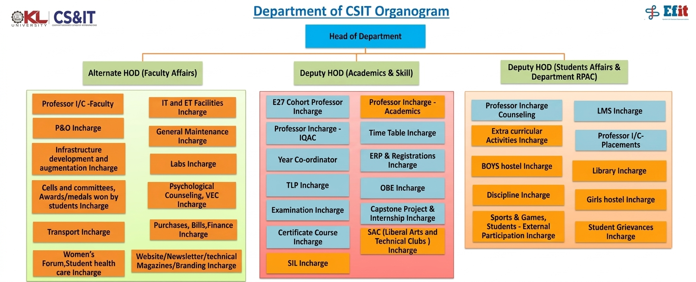

Department Organogram
The Department of Computer Science & Information Technology follows a well-defined hierarchical structure to ensure smooth academic and administrative functioning.

CS&IT Department Organogram (Academic Year 2025-26)
Note: The organogram shows the complete reporting structure including HoD, Associate Professors,
Assistant Professors, Research Committee, Placement Committee, Academic Committee, and Student Coordinators.